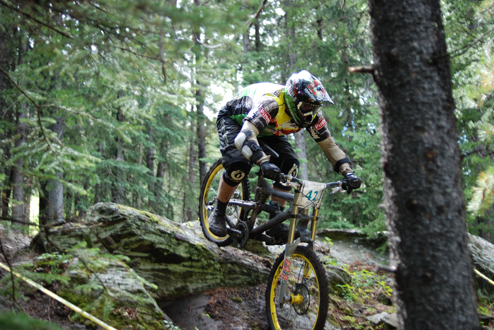
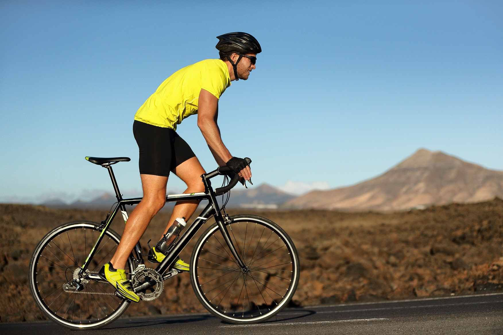
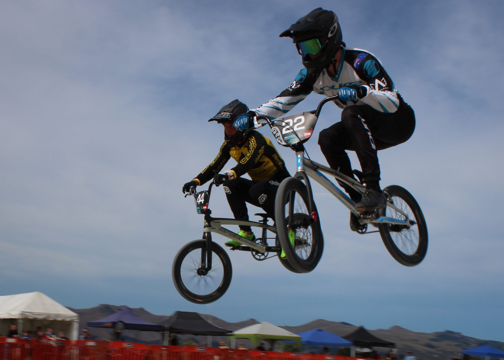
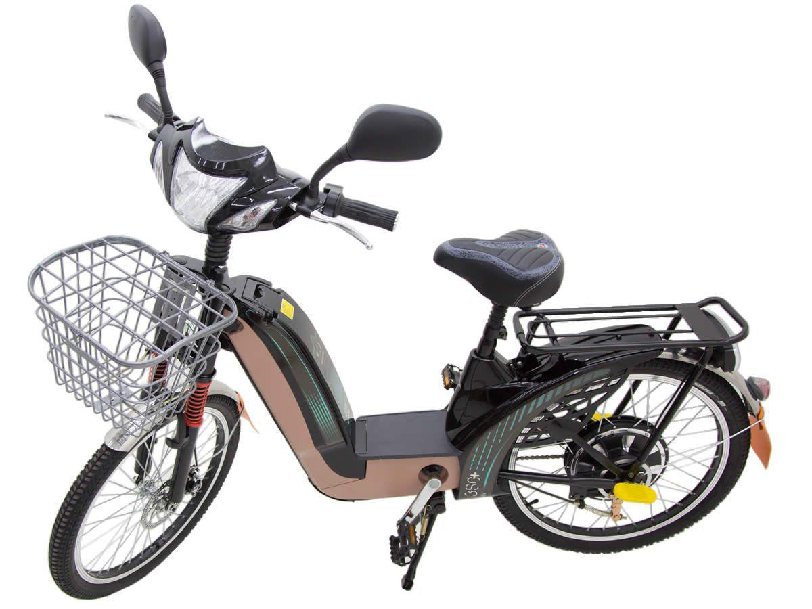
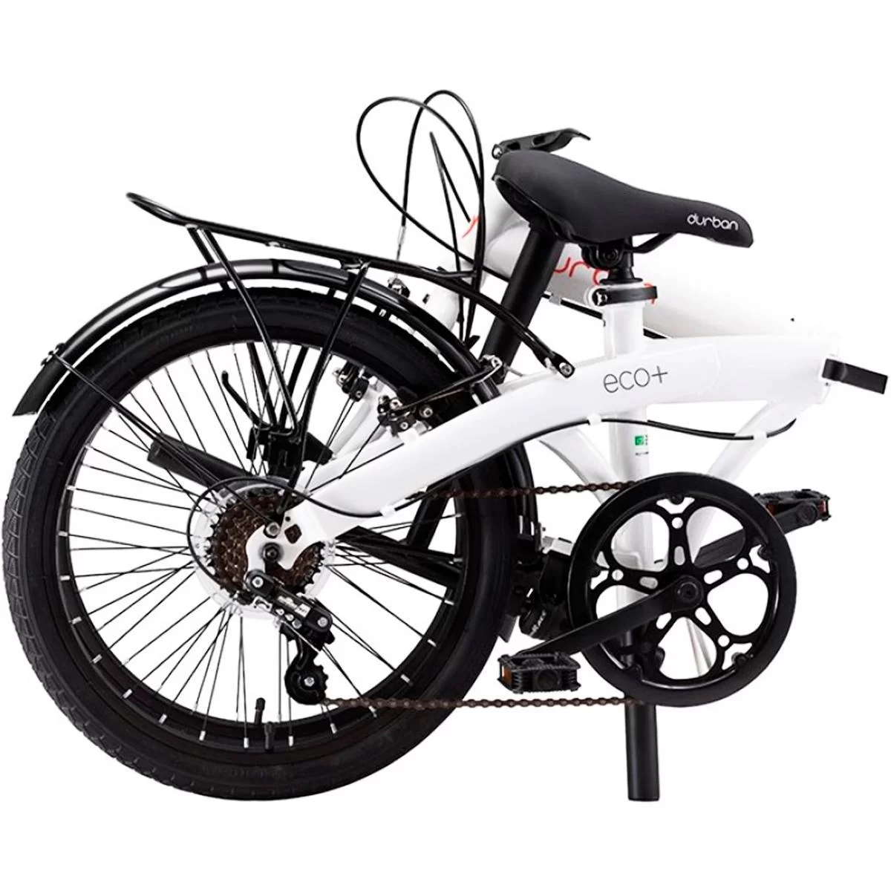

Tipos de Bicicletas
Mountain Bike
As mountain bikes são projetadas para trilhas e terrenos acidentados, com suspensão e pneus largos para maior tração e conforto.
Bicicleta de Estrada
As bicicletas de estrada são feitas para velocidade e eficiência em superfícies pavimentadas, com pneus finos e uma estrutura leve.
BMX
As bicicletas BMX são pequenas e robustas, ideais para acrobacias e corridas em pistas de terra.
Bicicleta Elétrica
As bicicletas elétricas possuem um motor que auxilia na pedalada, tornando-as perfeitas para deslocamentos urbanos e longas distâncias.
Bicicleta Dobrável
As bicicletas dobráveis são compactas e fáceis de transportar, ideais para quem precisa combiná-las com outros meios de transporte.